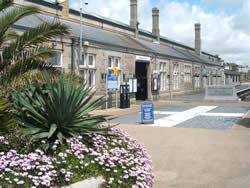
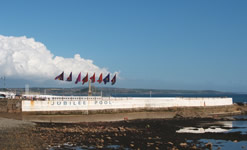

The History of Penzance
 Penzance (Cornish: Pensans) has long been in existence but until the 17th Century it was over shadowed by Marazion, further along the bay. Evidence of Iron Age settlements can be found at Lescudjack Castle. Over a thousand years ago, the chapel of St Anthony stood to the west of the towns harbour, near to the current St Mary’s Church. The only evidence of this is the carved face in a pillar standing along side St Mary's Church.
Penzance (Cornish: Pensans) has long been in existence but until the 17th Century it was over shadowed by Marazion, further along the bay. Evidence of Iron Age settlements can be found at Lescudjack Castle. Over a thousand years ago, the chapel of St Anthony stood to the west of the towns harbour, near to the current St Mary’s Church. The only evidence of this is the carved face in a pillar standing along side St Mary's Church.
The first written historical reference of Penzance as a town was in 1322, in the manorial records, and was a place to land fish. In comparison Marazion the now diverse neighbour was mentioned in the Doomsday booking 1088.
In the summer of 1578 Penzance was visited by the plague and records show that 10% (155) of the town’s people were killed. The plague visited the town again in 1647 when 217 people died.
Being at the south westerly tip of England means that Penzance is the first town that you come across when sailing from Europe and beyond. Over the course of history this has led to the town and those around it to be ransacked by various nations as well as Pirates. On July 23rd, a Spanish force led by Don Carlos de Amesquita ransacked Mounts Bay. Amesquita forces seized suppliers raided and burned the area before sailing away prior to confrontation with English forces.
From the 15th to 17th century Penzance experienced is largest growth spurt. Henry IV granted the town a royal market, Henry VIII granted the right to charge harbour dues and James I granted it the status of a borough.
During the English Civil war, Penzance was sacked by Thomas Fairfax for kindness shown to Lord Goring and Hoptons troops during the conflict.
Penzance borough council started major improvements to the town starting from the 1500’s. The market house and harbour were built during this time. The harbour was  extended in 1766 & 1785. In 1759 the construction of the reservoir allowed water pumps to be placed on public streets.
extended in 1766 & 1785. In 1759 the construction of the reservoir allowed water pumps to be placed on public streets.
Up until 1871, Penzance’s religious needs had been served by the local parish of Madron. At this time St Mary’s church was granted parish status by church authorities.
The pier was again extended in 1812 and 1814 John Mathews opened a dry dock, the first in the South West.
Penzance During & after the Victorian Times
The 1830’s and 40’s saw major improvements in the town. During this time Gas street lighting was introduced, The Market House (now Lloyds Bank) was demolished and rebuilt. St Mary’s Church was completed in1836 and the Roman Catholic Church in 1843. In 1930 the Egyptian House was constructed, and the first part of the Promenade (the only one in Cornwall) dates from 1844.
After the passing of the public health act in 1848, A health board was established. The first report shows streets were either macadamised or paved, the town lit by 121 gas lamps from October to March. Water was supplied from 6 public pumps and a further 53. At this time waste was still being collected by carts.
The Penzance railway station was opened in 1852, but trains only ran to Redruth at first, but later that same year it was extended to Truro. The link to Plymouth (and the rest of Britain) was not completed until 1859. At this time, passengers and goods had to change at Truro due to the tracks being two different gages. The line was sold to Great Western Railway in 1866 and was quickly converted to standard gage.
The railway allowed local food producers to transport their goods quickly up and down the county. Due to Penzance’s mild climate crops were ready early, allowing Cornish produce to demand a higher price at market.
The railway was the beginning of mass tourism for Penzance. The towns first guide book was published in 1860 and the famous Queens Hotel was opened the next year and expanded in 1871 and 1908. At this time Penzance was noted for it’s pleasantness of it’s station and the salubrity of the air and beauty of it’s natives.
The harbour again underwent improvements, Albert Pier was completed in 1858 and the light house in 1855. Ross swing bridge was built in 1881, a large Dry Dock in 1880 and a floating harbour with loch gates to retain water at low tide in 1884.
Public baths were opened on the Promenade in 1887 and Morrab gardens, with its sub – tropical plants two years later. A band stand was added in 1897.
In 1903, public buses were introduced to the town after a failed bid to extend the train line to St Just. The service carried 16,091 passengers in its first year, the following year further routes were added to St Just and Land’s End. The bus company later became First Devon and Cornwall Bus Network, which still services the area.
Land was reclaimed by Albert Pier in the 1930’s to allow an extra platform for additional perishable goods and to accommodate the thriving tourist influx during the summer months. A public cycle/footpath was also constructed on this land, linking Penzance and Marazion and allowing easy access to the beaches along Mounts Bay. Jubilee pool was opened to the public in May 1935 to celebrate King George V's Silver Jubilee.
Great Western Railways, The Cornish Rivera Express traveled from London to Penzance in 1904 and took just 7 hours to complete the journey. In 2007 the same journey takes just 5 hours to do. The Railway Company promoted the trip via postcards and an annual guide called ‘The Cornish Riviera’